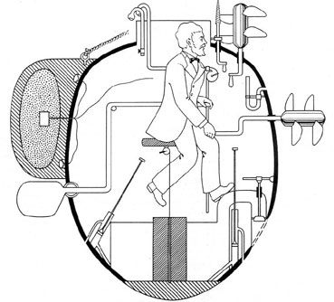
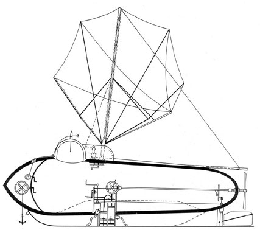
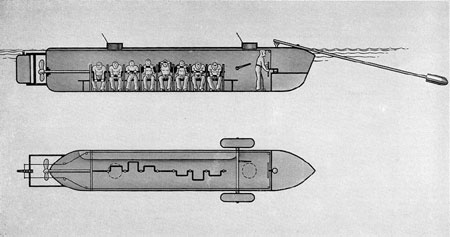

Early Submarines
1B1. David Bushnell's Turtle.
During the American Revolutionary War, a submarine was first used as an offensive
weapon in naval warfare. The Turtle, a one-man submersible invented by David Bushnell
and hand-operated by a screw propeller, attempted to sink a British man-of-war in
New York Harbor. The plan was to attach a charge of gunpowder to the ship's bottom
with screws and explode it with a time fuse. After repeated failures to force the
screws through the copper sheathing on the hull of the HMS Eagle, the submarine gave
up, released the charge, and withdrew. The powder exploded without result, except
that the Eagle at once decided to shift to a berth farther out to sea.

Figure 1-1. The TURTLE of David Bushnell, from a drawing by Lt. F. M. Barber, USN,
1875.
1B2. Fulton's Nautilus.
Although his name is most often associated with the invention of the steamboat, Robert
Fulton experimented with submarines at least a decade before he sailed the Clermont
up the Hudson. His Nautilus was built of steel in the shape of an elongated oval,
and was somewhat similar in structure to today's submarine. A sail was employed for
surface propulsion and a hand-driven propeller drove the boat when submerged. A modified
form of conning tower was equipped with a porthole for observation, since the periscope
had not yet been invented. In 1801, Fulton tried to interest France, Britain, and
America in his idea, but no nation ventured to sponsor the development of the craft,
even though his model displayed some of the best features of any submarine up to that
time.

Figure 1-2. Fulton's NAUTILUS, about 1800
1B3, The Confederate "Davids".
Development of the submarine boat was held back during all of this period by lack
of any adequate means of propulsion. Nevertheless, inventors continued resolutely
with experiments upon small, hand-propelled submersibles carrying a crew of not more
than six or eight men. On 17 February 1864, a Confederate vessel of this type sank
a Federal corvette that was blocking Charleston harbor. This first recorded instance
of a submarine sinking a warship was accomplished by a torpedo suspended ahead of
the bow of the Huntley as she rammed the Housatonic.

Figure 1-3. The HUNTLEY, one of numerous "Davids" constructed during the War Between
the States.
1B4. Garrett's steam propulsion.
Interest in the improvement of the submarine was active during the period of the War
Between the States, but the problem of a suitable means of propulsion continued to
limit progress. Steam was tried and finally in 1880 an English clergyman, the Rev.
Mr. Garrett, successfully operated a submarine with steam from a coal-fired boiler
which featured a retractable smokestack. During the same period, a Swedish gun designer,
Nordenfelt, also constructed a submarine using steam and driven by twin screws. His
craft, which could submerge to a depth of 50 feet, was fitted with one of the first
practical torpedo tubes.
1B5. Electric propulsion.
Meanwhile, electric propulsion machinery had proved its utility in many fields, and
in 1886, an all-electric submarine was built by two Englishmen, Campbell and Ash.
Their boat was propelled at a surface speed of 6 knots by two 50-horsepower electric
motors operated from a 100-cell storage battery. However, this craft suffered one
major handicap; its batteries had to be recharged and overhauled at such short intervals
that its effective range never exceeded 80 miles.